O Perseguidor Noturno
Antigo e poderoso guardião territorial nascido de rituais e sacrifícios. Quebrou o nariz de um cara por ter um apontador laser.


As aldeias ao longo do rio Arit, na fronteira do Punjab, tinham orgulho de seu guardião. Orgulhoso e mais do que um pouco assustado. O Tigre foi um presente de Rama, disseram, embora um presente raramente visto. Anos podem se passar com apenas uma pegada gigante na lama da margem do rio para provar que o Tigre ainda rondava as florestas entre as aldeias. Mas quando invasores do norte ou soldados do sul vinham para roubar e oprimir, os sinais do Tigre apareciam - corpos de invasores no alto das árvores, um aspirante a senhor da guerra espancado em sua tenda, todo um acampamento de bandidos destruído embora um tufão tivesse atingido. E os aldeões se perguntavam se havia alguém no mundo tão ignorante ou tão arrogante a ponto de ser indiferente a seu protetor. Quanto ao Tigre, ela mal se lembrava de ser menina. Ela se lembrava de ter doze anos e descobrir com horror que sua outrora nobre família, os protetores ungidos do vale, agora enriquecia quando forasteiros vinham para saquear. Ela se lembrou de seu tio perverso amarrando-a no altar do templo e conjurando o espírito do tigre para devorá-la. E ela se lembrava de lutar - lutar tanto e com tanta força que no final ela não sabia quem havia devorado quem.
 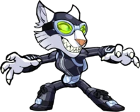
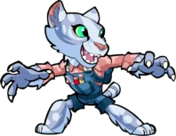
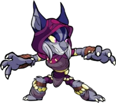
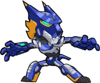
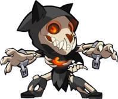
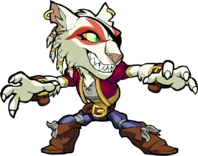
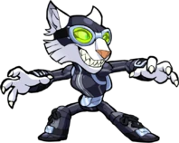
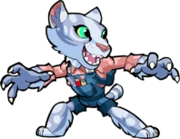
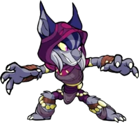
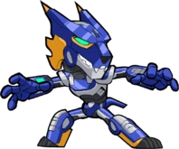
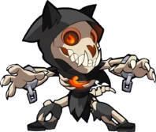
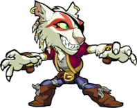